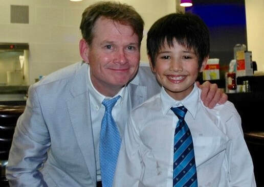
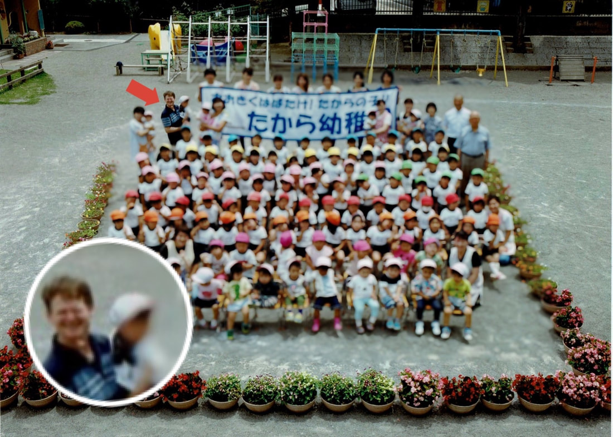

クリス先生について
カナダから来たクリスと申します！ カナダのWestern Ontario大学で学士号と修士号を取り、２９歳の時に日本に来ました。１年間だけ働くつもりでしたが、日本をとっても気に入り、そのまま住み続けることに！ 日本人の妻と一緒に、静かな田舎町で３人の子どもを育てました。今まで、新聞記者やスキューバダイビングインストラクター、大工、陶芸家など、色々な仕事を体験しました。趣味はギターの弾きがたり♪ 好奇心旺盛で、人と話したり笑うことが大好きです。 英語を教えたり、新しいことを学ぶのは、とても楽しいです。そのなかでも一番の喜びは、生徒さんの成長を感じられる瞬間です！ 一人ひとりと全力で向き合い、楽しいレッスンをすることを大切にしています。
まず最初に働いたのは「アメリカンクラブ」という英会話学校の宇都宮校と真岡校です。同時期に益子町にある「有生塾」でも英語講師として働きました。茂木町の愛泉幼稚園、益子町のたから幼稚園では何年にも渡り園児たちに英語を教えてきました。たから幼稚園では新しく英会話プログラムを開設し、後に真岡市で新しい英会話教室を開きました。 約20年間、NHK文化センター宇都宮教室にて大人向けに楽しい英会話を教えていました。真岡市の子育てサークル「ちゅうりっぷ英語」で10年間、そして市の運営する教室や「放課後等デイサービスグローバルキッズメソッド真岡店」など様々な場所で英語を教えてきました。また、益子町にあるカフェ作坊吃（ゾーファンチィ）のオーナー鈴木史絵さんと一緒に英語カフェを月に一回開催していました。 そして数年前に宇都宮HATcafeにて大人向け英会話教室を開きました。 英語を教えることが大好きです。ぜひ私と一緒に英語を学びましょう！